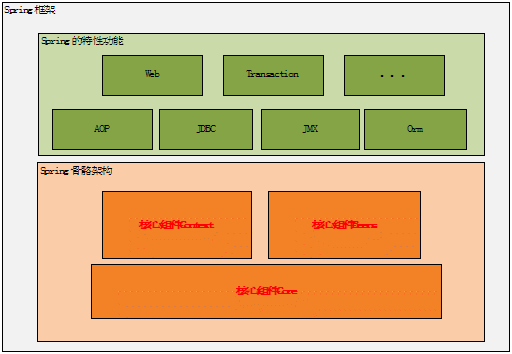

有那几个核心组件？
为什么需要这些组件？
它们又是如何结合在一起构成Spring的骨骼架构？
Spring的AOP特性又是如何利用这些基础的骨骼架构来工作的？
Spring中又使用了那些设计模式来完成它的这种设计的？
它的这种 设计理念对对我们以后的软件设计有何启示？
本文将详细解答这些问题。
Spring的骨骼架构
Spring总共有十几个组件，但是真正核心的组件只有几个，下面是Spring框架的总体架构图：
图1.Spring框架的总体架构图

从上图中可以看出Spring框架中的核心组件只有三个：Core、Context和Beans。
Spring的设计理念
其实Spring就是面向Bean的编程（BOP,Bean Oriented Programming），Bean在Spring 中才是真正的主角。
我们用Spring的原因是什么?想想你会发现原来Spring解决了一个非常关键的问题:把对象之间的依赖关系转
而用配置文件来管理，也就是他的依赖注入机制。而这个注入关系在一个叫Ioc容器中管理，那Ioc容器中
又是什么就是被Bean包裹的对象。Spring正是通过把对象包装在 Bean中而达到对这些对象管理以及一些列额外
操作的目的。
构建一个数据结构，然后根据这个数据结构设计它的生存环境，并让它在这个环境中
按照一定的规律在不停的运动，在它们的不停运动中设计一系列与环境或者与其他个体完成信息交换。
这样想来回过头想想我们用到的其他框架都是大慨类似的设计理念。
核心组件如何协同工作
前面说Bean是Spring中关键因素，那Context和Core又有何作用呢？
前面吧Bean比作一场演出中的演员的话，那Context就是这场演出的舞台背景，而Core应该就是演出的道具了。
我们知道Bean包装的是Object，而Object必然有数据。如何给这些数据提供生存环境就是Context要解决的问题。
对Context来说他就是要发现每个Bean之间的关系，为它们建立这种关系并且要维护好 这种关系。所以Context
就是一个Bean关系的集合，这个关系集合又叫Ioc容器，那Core组件又有什么用武之地呢？其实Core就是
发现、建立和维护每 个Bean之间的关系所需要的一些列的工具，从这个角度看来，Core这个组件叫Util更能让
你理解。
三者关系可以用下图来表示：